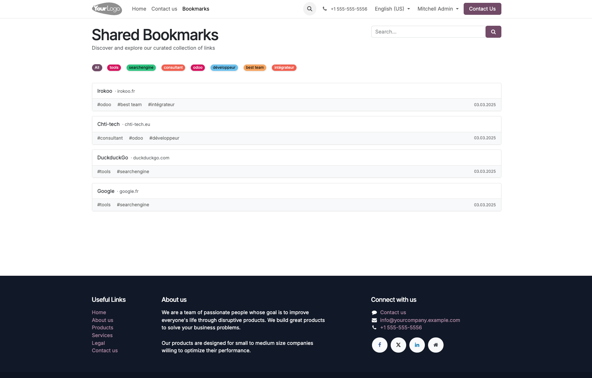
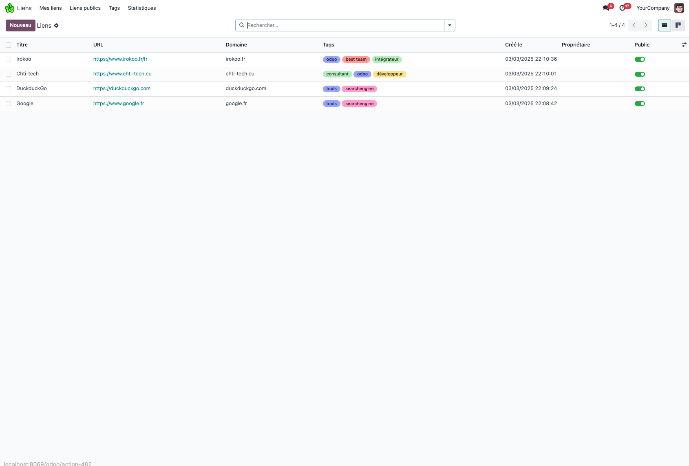
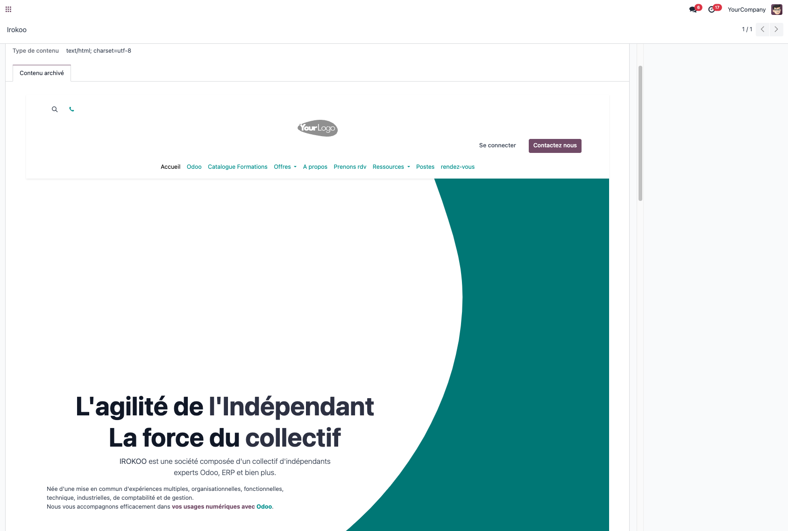
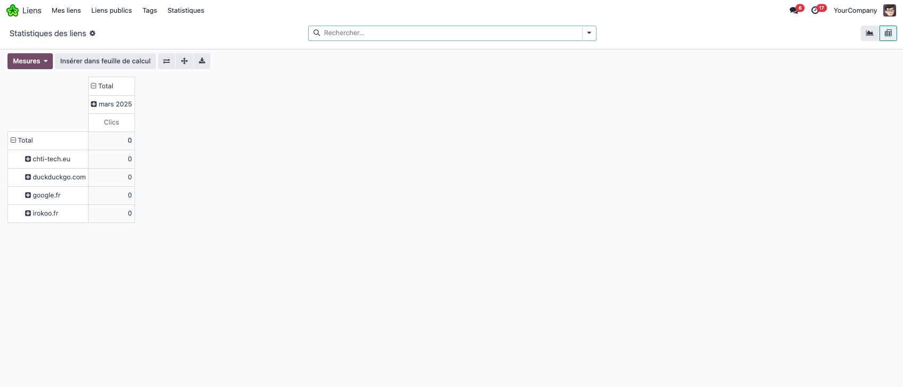

Shared Bookmarks lets your team save, tag and share web bookmarks in Odoo, publish the public ones on a bookmark page of your website, and archive the content of a page to read it later.
Useful links end up scattered in browsers, chat messages and emails, and nobody finds them when they are needed. This module keeps them in one Odoo app, with an owner, tags, notes and a public or private status, in the spirit of the Shaarli link sharing tool.
/bookmarks, with tag filter, search on title and description, pagination and a detail page per bookmark./api/bookmarks/add (logged in users) to add a bookmark with its tags from a script or a bookmarklet.The public bookmark page of the website, with its tag filter and search box:

The list of bookmarks in the backend, with domain, tags and public switch:

An archived copy of a page, stored on the bookmark:

Click statistics by domain and month:

/bookmarks on your website to see the public bookmarks.Archiving a page downloads it from its own address. At the same time, the domain of the bookmark is sent to the Google favicon service to fetch the site icon. Nothing is sent outside of Odoo as long as no page is archived.
base, web, mail, website. Python libraries requests and Pillow, already required by Odoo.Can other users see my bookmarks?
Only the ones you mark as Public. Bookmark managers see and modify all bookmarks.
Are public bookmarks visible to website visitors?
Yes, on the /bookmarks page and its detail pages, without login.
What happens if a page cannot be archived?
An error message is shown and the bookmark is left unchanged. Pages behind a login or a robot protection usually cannot be archived.
Are tags shared between users?
Tags belong to their owner, who is the only one allowed to modify them. Tags of public bookmarks are shown to everyone.
Questions or issues: support@irokoo.fr